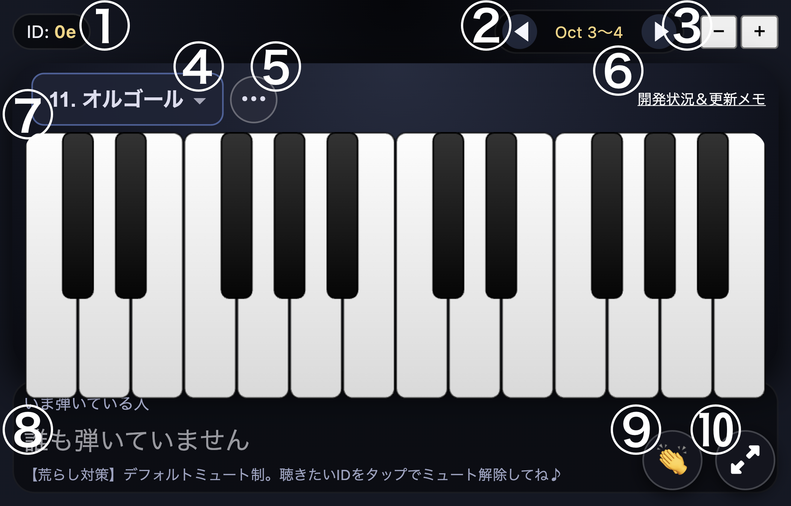
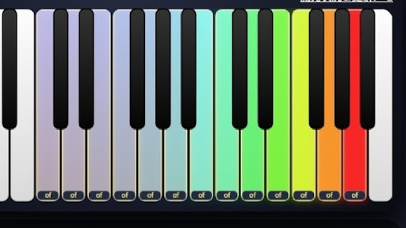
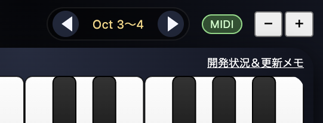

概要
おんjぴあの情報まとめでは「おんjぴあの」の機能やツールについて解説しています。
おんjぴあのについて何かお困りの際は「機能」や「Q＆A」をご確認ください。それでも解決しない場合は、おんjピアノ部もしくはおんjぴあの情報まとめ管理スレにてご相談ください。
当サイトやおんjぴあのに関する質問、要望などがあればサイト下部のリンク先までお願いします。
おんjぴあのとは
「おんjぴあの」はおんj（おーぷん2ch）内で使えるピアノ機能です。
スレタイに「ピアノ（全角カタカナ）」を入れることで起動でき、スレにいる人とリアルタイムで演奏を共有することができます。
MIDIキーボードも使用できるため、本格的な演奏が可能です。
機能

自身のIDが表示されます。このIDはおんjぴあの専用のものです。おんjのIDと同じく、日付が変わるとこのIDも変わります。
音色を選択できます。音色は現在40種類収録されています。
各音色の所感まとめを表示する
| ピアノ1 | シンプルな8bit系 |
|---|---|
| ピアノ2 | こもった感じの音 低音が聞こえにくい |
| ピアノ3 | 2よりこもった感じ 低音が聞こえにくい |
| ピアノ4 | 1とほぼ同じ 若干静か |
| エレピ1 | こもってる 若干粒立ちが良い 低音聞こえにくい |
| エレピ2 | 1よりもこもってる 低音✕ |
| オルガ1 | 8bit系 若干低音が荒い |
| オルガ2 | 1より荒い 高い音金管っぽい |
| ベル1 | こもってる 低音✕ |
| ベル2 | 1よりもはっきりしてる 低音✕ |
| チャイム | 大分こもってる 音が小さい 低音✕ |
| オルゴ | こもり気味 低音少しまし |
| ギタ1 | 軽めのbit音 |
| ギタ2 | ほぼ8bit 若干静か？ |
| ギタ3 | 低音荒め 若干金管っぽい |
| シャミセ | こもってる 低音✕ |
| ベース1 | ほぼ8bit 若干低音強い？ |
| ベース2 | こもってる |
| ベース3 | 金管っぽい |
| リード1 | 荒め 金管っぽい |
| リード2 | ほぼ8bit |
| 8bitL | 安定の音色 若干うるさい |
| パッド1 | オカリナっぽい？ 低音✕ |
| パッド2 | 1よりこもってる 低音✕ |
| ストリン | 金管っぽい |
| チップ1 | ほぼ8bit |
| チップ2 | ほぼ8bit 音が粒立ってる |
| ピコピ | こもってる |
| ネコニャ | こもってる |
| カエル | 金管っぽい |
| ホワーン | 鉄琴みたい 低音✕ |
| フルート | フルートっぽい 低音✕ |
| クラリネ | クラリネットっぽい |
| オーボエ | 金管っぽい 若干軽め |
| サックス | 金管っぽい |
| ブラス | 8bit系 若干静か |
| コーラス | 笛っぽい 低音✕ |
| ハープ | 若干こもってる 若干粒立ってる |
| マリンバ | マリンバっぽい |
| ビブラ | 若干こもってる |
| コト | 8bit系 若干静か |
オクターブを変更できます。◀を押すと低く、▶を押すと高くなります。
表示される鍵盤数を変更できます。＋を押すと大きく（鍵盤数が少なく）−を押すと小さく（鍵盤数が多く）なります。
この鍵盤をタップすることで演奏できます。自分の演奏だけでなく、他の人の演奏もこの鍵盤に表示されます。鍵盤の色は音の強さによって変わります。※鍵盤をタップして演奏する場合は音の強さは一定になります
おんjぴあのについての開発状況や更新状況が確認できます。 https://hayabusa.open2ch.net/lib/game/piano/memo.txt
演奏している人のID（おんjぴあの専用）が表示されます。他の人のIDだけでなく、自身のIDも表示されます。ここに表示されたIDをタップすることでミュート、ミュート解除ができます。ミュートしている場合はIDが暗くなり、ミュートを解除している場合は明るくなります。荒らし対策として最初はミュートした状態になるため、演奏を聞きたい場合はミュートを解除してください。

鍵盤の色は音の強さによって変わります。
ベロシティの数値で管理されており、右図は左から10,20,30,40,50,60,70,80,90,100,110,120,127となっています。
なお、音の強さはMIDIキーボードや自動演奏でのみ変更することができます。
スマホで演奏する場合は音の強さは変更できません。

MIDIキーボードとおんjぴあのを開いているブラウザを線で繋ぐ（通信接続が可能かはわかっていません）ことで演奏できます。※サイトにMIDIデバイスの操作と再プログラムを許可する必要があります
接続が完了すると右上に「MIDI」という表示が出ます。
ペダルの使用は可能ですが、ペダルを踏んだ状態で鍵盤を離すと音が大きくなる不具合が発生しています。対策としてMIDIキーボードのベロシティを強めで固定しておくと少しマシになります。
年表
- 2025/12/8 おんjピアノ公開
- 2025/12/9 楽器やオクターブ変更、デフォルトミュート制に対応
- 2025/12/10 外部MIDIキーボード、鍵盤サイズ変更に対応
- 2025/12/11 ペダル、音強弱、PCに対応
- 2025/12/13 ID日別制に ペダル、音強弱の再調整
- 2025/12/14 音が自然減退するように
- 2026/2/10 現行のピアノ部ができる
- 2026/3/19 おんjぴあの故障（演奏共有ができなくなる）
- 2026/4/20 おんjぴあの復旧
おんjぴあのは何度かアップデートを行なっており、現在 ver2 から ver15 までのリンクが確認されています。
各バージョンへのリンクを表示する
用語解説
MIDIと呼ばれる演奏情報を音楽ソフトに入力するためのコントローラー。この機能が付いたキーボードをデバイスと接続することでキーボードを使った演奏が可能。
MIDIキーボードなどを使用せず、指（マウスやスマホのタッチパネル）で演奏すること。
おんjぴあのでは外部ツールや拡張機能を使うことで自動演奏を行うことができる。ただし、epianoでは禁止されているため注意。その場の空気に応じて、節度を持って使用する必要がある。
loopmidiというツールを使用する自動演奏のこと。拡張機能を用いた自動演奏と区別するための呼び方。
拡張機能を用いた自動演奏のこと。この拡張機能がjsonという形式のファイルを使用することが由来。
矢野さとる氏制作のリアルタイムでピアノ演奏を共有できるWebサービス。おんjぴあのと違い、音色はピアノのみである。おんjぴあのが故障などで利用できない場合は、主に本サイトを避難先として利用している。https://epiano.jp/
海外のピアノ共有サイト。epianoの元ネタになった。音色などのカスタムが豊富。https://multiplayerpiano.com/
海外のピアノ共有サイト。ピアノだけでなく様々な音色が備わっている。https://musiclab.chromeexperiments.com/Shared-Piano/#gFDYwKggY
Q＆A
質問一覧（クリックで各項目へ）
- おんjピアノって何なの？
- どうやって演奏するの？
- 「midiの操作と再プログラムをリクエストしています」の許可は？
- 音が聞こえない
- 音色を変更したい
- 鍵盤数を変更したい
- オクターブを変更したい
- パソコンでも演奏できる？
〈基本的な機能についてのQ&A〉
おんj（おーぷん2ch）内で使えるピアノ機能です。 スレにいる人とリアルタイムで演奏を共有することができます。
スレ上に表示されている鍵盤を押すと演奏できます。 デバイスとMIDIキーボードを接続することでMIDIキーボードでの演奏も可能です。
許可して大丈夫です。 MIDIキーボードで演奏する場合は許可する必要があります。
おんjピアノは荒らし防止のためデフォルトミュート制になっています。 おんjピアノ下部におんjピアノ専用のIDが表示されているため、演奏を聴きたい場合はそのIDを押してください。 なお、ミュートにしたい場合はもう一度IDを押すとミュートにできます。 自分の演奏が聴こえない場合は誤って自分のIDをミュートにしてしまっている可能性があります。 おんjピアノ左上に自分のIDが表示されているため、そのIDがミュートになっていないか確認してください。
おんjピアノ左上、自身のIDの右側で音色を選択することができます。 当サイト及びピアノ部スレに各音色の所感をまとめたものを載せています。
おんjピアノ右上の+、-ボタンから変更できます。 +を押すと大きく（鍵盤数が少なく）、-を押すと小さく（鍵盤数が多く）なります。
おんjピアノ右上、鍵盤数を変更するボタンの左側で変更できます。 ◀を押すと低く、▶を押すと高くなります。 ◀と▶の間に書かれている数字は現在表示されているオクターブを表しています。
できます。 ただし、パソコンのキーボードを使用して演奏することはできないため、鍵盤をクリックすることでのみ演奏可能です。
〈スマホで演奏する場合のQ&A〉
未修正のバグです。 ニ音以上鳴らしたい場合はMIDIキーボードや自動演奏ツールを使用してください。
画面を横向きにして親指で操作するとやりやすいです。
〈MIDIキーボードで演奏する場合のQ&A〉
おんjピアノを開いているデバイスとMIDIキーボードを線で繋ぐことで演奏可能です。 サイトにmidiの操作と再プログラムを許可しておいてください。
キーボードが読み込まれている場合は「MIDI」という文字ががおんjピアノ右上に表示されます。 キーボードを操作しても反応しない場合は、まずこの表示が出ているかを確認してください。 なお、キーボード、デバイスの機種により読み込まれない場合があります。 個人的にはスマホよりもパソコンの方がMIDI接続は安定する気がします。
その場合は一度サイトを更新してください。 それでも音が出ない場合はデバイスを再起動してください。
関連リンク
- おーぷん2ちゃんねる なんでも実況J
- 矢野さとる氏公式X
- おんjピアノ部Part1
- おんjピアノ部Part2
- おんjピアノ部Part3
- おんjピアノ部Part4
- epiano
- epianoおんj部屋
- multiplayer
- Shared-Piano
- おんjぴあの情報まとめ管理スレ 質問や要望はこちらへどうぞ 当サイトの更新情報もこちらに載せています